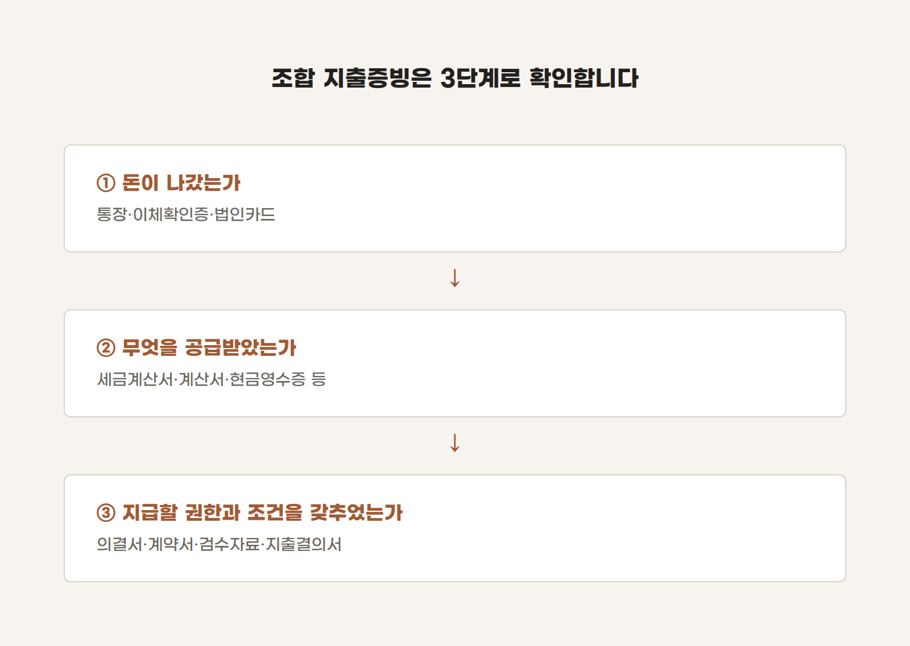

계좌이체만 하면 증빙은 끝난 걸까?
정비사업조합의 회계자료를 확인하다 보면 통장에는 지급내역이 분명히 남아 있는데, 계약서나 세금계산서 등 관련 자료는 충분하지 않은 경우가 있습니다.
이때 종종 이런 설명을 듣습니다.
계좌이체 내역이 있으니 지급한 사실은 확인되지 않나요?
맞습니다. 계좌이체 내역은 돈이 실제로 지급됐다는 사실을 보여주는 중요한 자료입니다.
그러나 조합의 비용 집행에서 확인해야 하는 것은 그것만이 아닙니다.
왜 지급했는지, 무엇을 공급받았는지, 계약상 지급조건은 충족됐는지, 필요한 승인과 증빙을 갖추었는지까지 서로 연결되어야 합니다.
쉽게 말해, 계좌이체는 증빙의 하나이지, 증빙의 전부는 아닙니다.
1. 계좌이체 내역으로 확인할 수 있는 것
통장이나 이체확인증에서는 다음 내용을 확인할 수 있습니다.
- 지급일
- 지급금액
- 출금계좌와 입금계좌
- 예금주
- 이체할 때 기재한 메모
하지만 계좌이체 내역만으로는 다음 사항을 충분히 알기 어렵습니다.
- 어떤 재화나 용역을 공급받았는지
- 계약금액과 지급액이 일치하는지
- 계약서상 지급조건이 충족되었는지
- 조합 내부의 승인과 검수를 거쳤는지
- 거래에 필요한 세무상 증빙을 받았는지
예를 들어 매월 임차료가 임대인의 계좌로 이체된 사실이 통장에 남아 있다고 해보겠습니다.
계좌이체 내역은 임차료가 지급되었다는 사실을 보여줍니다. 그러나 임대차계약의 내용, 과세 여부, 공급가액과 부가가치세까지 모두 설명해 주지는 못합니다.
따라서 계좌이체 내역은 '돈이 지급된 사실'을 보여주는 자료정도로 이해하는 것이 정확합니다.
2. 거래의 내용을 보여주는 증빙은 따로 있습니다
거래의 내용을 확인하려면 세금계산서·계산서·신용카드 매출전표·현금영수증 등의 자료를 함께 살펴봐야 합니다.
법인세법 제116조에서도 일정한 거래에 대해 다음과 같은 지출증명서류를 규정하고 있습니다.
- 신용카드 매출전표
- 현금영수증
- 세금계산서
- 계산서
제공된 정비사업조합등 표준예산회계규정도 지출 시 세법상 적격증빙을 수취하고, 전표나 지출결의서를 작성하여 회계장부에 기록하도록 정하고 있습니다.
따라서 비용을 계좌이체로 지급했다면 이체내역만 보관할 것이 아니라, 거래의 성격에 맞는 증빙을 함께 수취했는지 확인해야 합니다. 다만, 구체적인 세법상 증빙의무와 예외는 조합의 세무상 지위뿐만 아니라 거래 상대방과 거래 유형에 따라서도 달라질 수 있습니다.
모든 지출에 하나의 기준을 일률적으로 적용하기보다, 거래의 내용을 먼저 확인해야 하는 이유입니다.
3. 소액 지출이라고 아무 자료가 없어도 되는 것은 아닙니다
세법에서는 일정한 소액거래 등에 대해 지출증명서류 수취의 예외를 두고 있습니다.
예를 들어 법인세법 시행령 제158조는 일정 요건을 충족하는 건당 3만원 이하 거래 등을 예외로 규정하고 있습니다. 하지만 적격증빙 수취의무의 예외에 해당한다고 해서 지출 자체에 대한 근거까지 남기지 않아도 된다는 뜻은 아닙니다.
최소한 다음 내용은 확인할 수 있어야 합니다.
- 거래일자
- 거래처
- 지급금액
- 구입하거나 제공받은 내용
- 사용목적
- 내부 승인내역
조합 내부의 지출결의서와 일반 영수증 등도 함께 보관할 필요가 있습니다. 또한 하나의 거래를 여러 차례로 나누어 지급했다고 해서 각각 별개의 소액거래가 되는 것은 아닙니다. 단순히 금액만 보고 판단하기보다는 실제 거래의 내용을 기준으로 확인해야 합니다.
4. 조합의 지출증빙은 세 층으로 확인해야 합니다
조합의 지출자료는 다음 세 가지 층으로 나누어 보면 이해하기 쉽습니다.

통장에는 이체내역이 있지만 계약서와 세금계산서가 없을 수 있습니다. 반대로 세금계산서는 발급되었지만 계약서상 지급조건이 충족되었는지 확인할 자료가 없을 수도 있습니다.
결국 증빙을 확인한다는 것은 영수증 한 장을 찾는 일이 아닙니다.
거래의 시작부터 지급까지 이어지는 자료가 서로 일치하는지 확인하는 일입니다.
지급 전에 확인할 다섯 가지
조합 임원과 회계담당자는 비용을 지급하기 전에 다음 사항을 확인해볼 필요가 있습니다.
- 계약서 또는 비용을 지급할 근거가 있는가?
- 계약서상 지급조건과 검수절차를 충족했는가?
- 거래 유형에 맞는 세금계산서·계산서·카드전표·현금영수증 등을 받았는가?
- 지출결의서에 지급목적과 예산과목이 정확하게 기재되어 있는가?
- 지출결의서·거래증빙·계좌이체 내역의 거래처와 금액이 서로 일치하는가?
적격증빙을 받지 않았다고 해서 모든 거래가 곧바로 존재하지 않았던 거래가 되는 것은 아닙니다. 계약서나 이체내역 등 다른 자료를 통해 실제 거래 사실이 확인되는 경우도 있습니다.
하지만 실제 거래가 있었다는 것과 세법 및 내부 규정에서 요구하는 증빙을 적절히 갖추었다는 것은 별개의 문제입니다. 조합 회계에서 중요한 것은 돈이 나갔다는 사실만 남기는 것이 아닙니다.
왜 지급했는지, 무엇을 공급받았는지, 어떤 절차를 거쳤는지를 제3자가 다시 확인할 수 있도록 기록으로 남기는 것입니다.
계좌이체는 증빙의 끝이 아니라, 지출을 확인하는 여러 자료 중 하나입니다.
이 글은 2026년 9월 5일 현재 시행 중인 법령과 제공된 표준예산회계규정을 바탕으로 작성한 일반적인 정보입니다. 조합의 법적·세무상 지위, 거래 상대방, 거래 유형 및 내부 규정에 따라 적용되는 증빙요건이 달라질 수 있으므로 실제 업무에 적용할 때에는 구체적인 사실관계를 별도로 확인하시기 바랍니다.
조종환 공인회계사·세무사